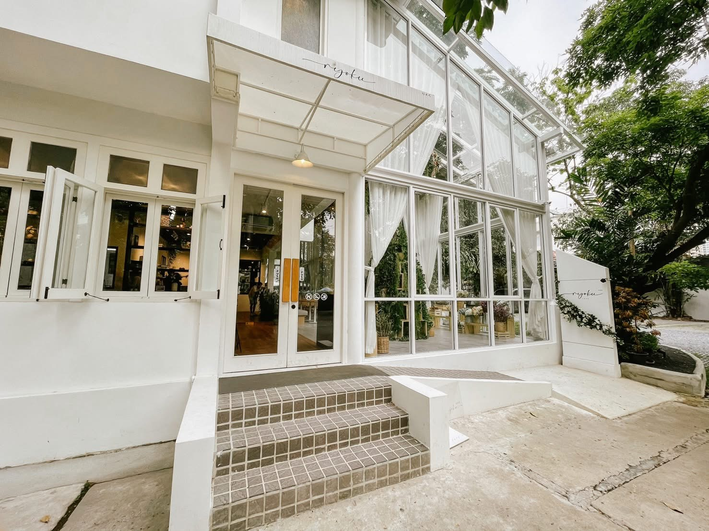
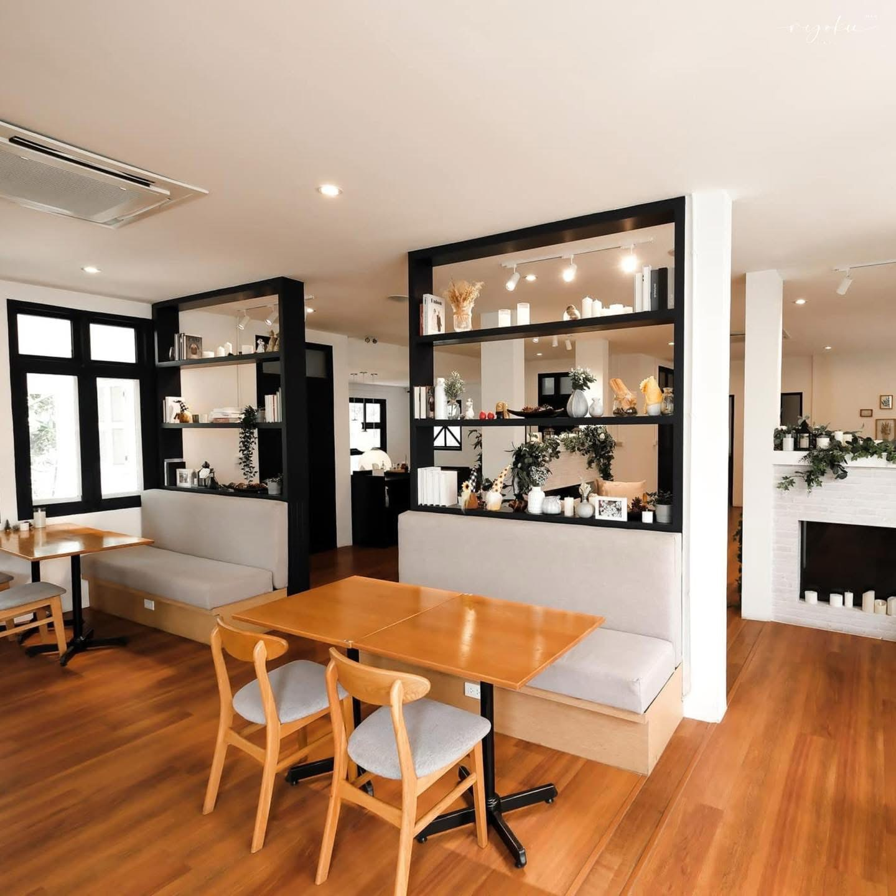
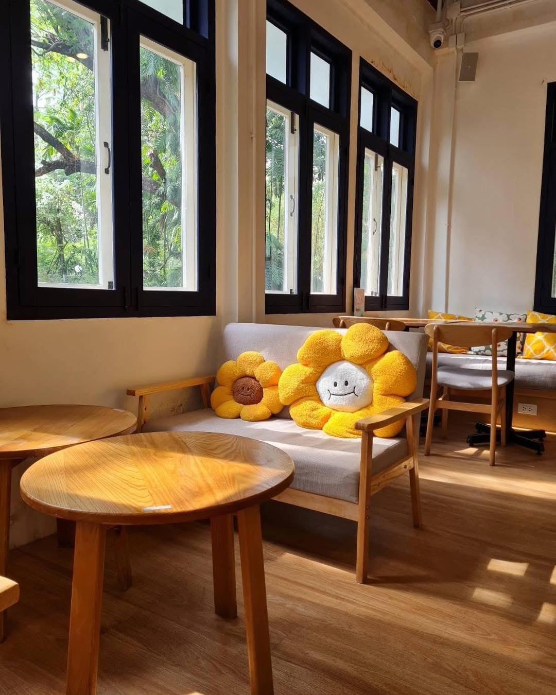
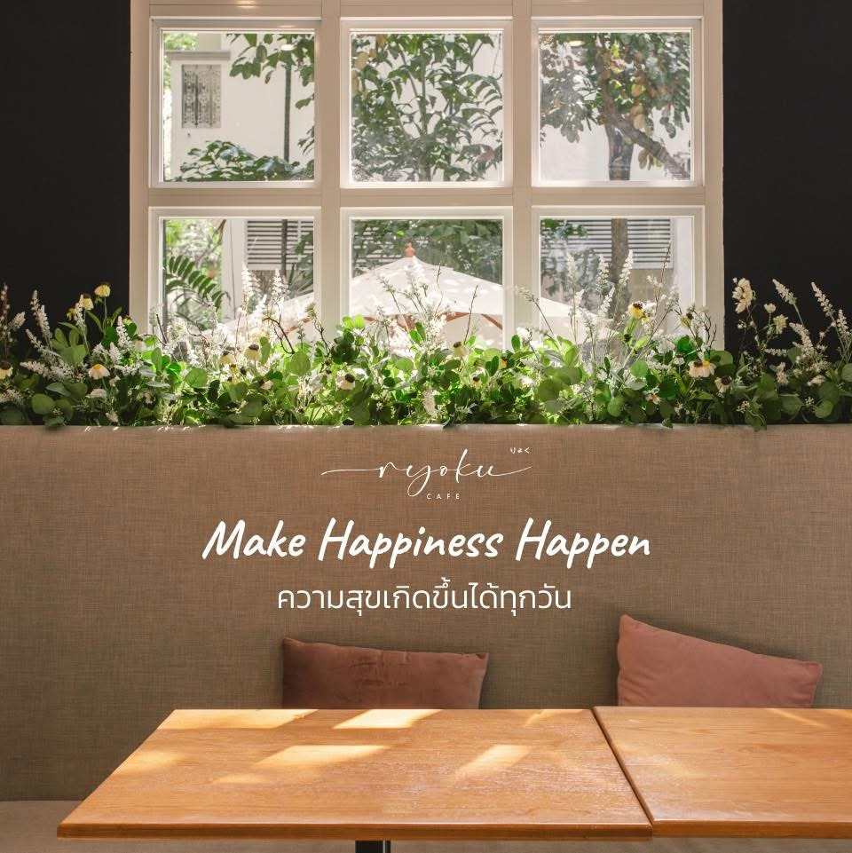
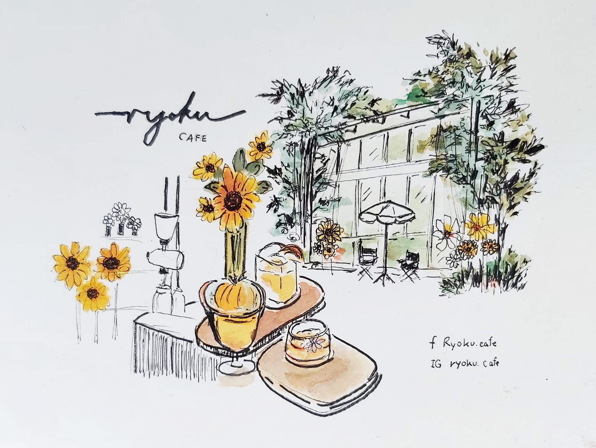
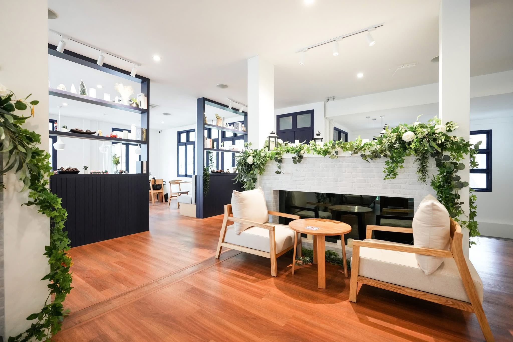

Osaka-style souffle
Soft pancakes prepared as the gentle signature of the house.
Bright, composed and quietly refined. A Sukhumvit garden house for souffle pancakes, brunch and slow cafe moments.


Soft pancakes prepared as the gentle signature of the house.
Comfort plates, pasta, toast, coffee and seasonal desserts.
A renovated two-floor white house near BTS Phrom Phong.
Our favorites
Sweet, savory and refreshing favorites from the Ryoku menu, arranged with a clean editorial flow.

Souffle pancakes with cream, fruit and a refined Ryoku finish.

A layered specialty coffee with a smooth, photogenic finish.

Toast layered with Parma ham, melon, mint and creamy avocado.
Why Ryoku
Ryoku brings together Japanese-inspired pancake craft, modern cafe comfort and a setting made for taking your time.
White house architecture, soft curtains, natural light and warm table textures.
Visit for brunch, souffle pancakes and afternoon coffee near BTS Phrom Phong.

Photos
A look inside the garden house — exterior, interiors, plated dishes and the quiet details that define a visit to Ryoku.









Journal
A quiet read on what to order, what to expect and the best time to come.


Ryoku's pancakes are served tall and tender, with cream and fruit adding contrast instead of heaviness. They are best enjoyed fresh from the kitchen.
by Ryoku

The cafe sits in a two-floor white house with garden seating, glass windows and soft curtains. It is close to BTS Phrom Phong, so it works for both planned brunch and quick coffee.
by Ryoku

Dirty Coffee is a layered milk-and-espresso drink with a rich finish. For something lighter, seasonal refreshers pair well with toast, pasta and garden seating.
by Ryoku

Ryoku is not only for pancakes. The menu also includes pasta, Parma and melon toast, soup and coffee, making it easy to build a full lunch or a lighter cafe stop.
by RyokuOpen daily, 08:00 - 20:00. Near BTS Phrom Phong.
Words from guests
Guests share their impressions from brunch, afternoon coffee and time spent in the garden.
Ariya P. · Brunch guest
Napat S. · Bangkok creative
Mina K. · Coffee regular
Ploy T. · Weekend visitor
Kenji M. · Cafe regular
FAQ
Ryoku is known for Osaka-style souffle pancakes, Japanese-Western brunch, coffee and its garden house setting.
Ryoku Cafe is at 28 Sukhumvit 35, Bangkok, near BTS Phrom Phong.
The cafe is open daily from 08:00 to 20:00.
Yes. Call +66 9-2772-6000 for visit questions and reservations.